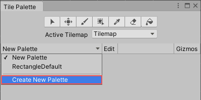

Creating a Tile Palette
Place a selection of Tiles onto Tile Palettes so that you can pick Tiles from the Palette to paint on Tilemaps. To create a Tile Palette, open the Tile Palette window by going to Window > 2D > Tile Palette. If you do not have this option, then the 2D Tilemap Editor package may not be installed. If so, download the 2D Tilemap Editor package from the Package Manager.
The Tile Palette window is empty by default. Select the New Palette drop-down menu to open a list of Tile Palettes available in the Project, or for the option to create a new Palette. Select the Create New Palette option to create a new Palette.

Select the Create New Palette option from the drop-down menu.
After selecting the option to create a new Tile Palette, the Create New Palette dialog box becomes available. It contains the different property settings and options available when creating a new Palette:
Create New Palette options.
With expanded Grid options.
Create New Palette properties
| 属性 | 功能 |
|---|---|
| 名称 | 为创建的瓦片面板资源提供一个名称。 |
| Grid | 选择要将创建的瓦片面板绘制到的网格布局。 |
| Rectangle | 如果要为默认矩形瓦片地图创建面板，请选择此选项。 |
| Hexagon | 如果要为六边形瓦片地图 (Hexagonal Tilemap) 创建面板，请选择此选项。 |
| Isometric | 如果要为等距瓦片地图 (Isometric Tilemap) 创建面板，请选择此选项。请参阅创建用于等距瓦片地图的瓦片面板以了解更多信息。 |
| Isometric Z as Y | 如果要为 Isometric Z as Y Tilemap 创建面板，请选择此选项。请参阅创建用于等距瓦片地图的瓦片面板以了解更多信息。 |
| * Hexagon Type (only available when the Hexagon Grid type is selected) | 选择要将瓦片面板绘制到的六边形瓦片地图的类型。请参阅有关六边形瓦片地图的文档以了解更多信息。 |
| Cell Size | 要将瓦片绘制到的单元格的大小。 |
| Automatic | The Cell Size is automatically set in Unity units and based on the size of the Sprite used to create the Tile Assets. If there are multiple Tiles, the Cell Size is adjusted to match the first Tile from the bottom left of the Palette, so that it fits exactly on a cell. |
| Manual | 选择此选项可输入自定义大小值。 |
| Sort Mode | Determines the transparency sort mode of Renderers in the Tile Palette. |
| Default | The default transparency Sort Mode. This mode is determined by the Graphics Settings of the project. |
| Orthographic | Select this mode to sort Renderers based on the perpendicular distance from the camera to a Renderer in the Tile Palette. |
| Perspective | Select this mode to sort Renderers based on the direct distance from the camera to a Renderer in the Tile Palette. |
| Custom Axis Sort | Select this mode to sort objects based on their distance along a custom axis. |
| Sort Axis | Set the XYZ values for the sorting axis, if the Sort Mode is set to Custom Axis Sort. |
Name the newly created Palette and select the desired settings, then select the Create button. Select the folder to save the Palette Asset file into when prompted. The newly created Palette is automatically loaded in the Tile Palette window.
A blank Tile Palette
Drag and drop Textures or Sprites from the Assets folder onto the Tile Palette, and choose where to save the new Tile Assets when prompted. New Tile Assets are generated in the selected save location, and the Tiles are placed on the grid of the active Tile Palette window.

Use the following shortcuts and actions to navigate the Palette window and began picking Tiles to paint on the Tilemap in the Editor window.
| Shortcut/Action | 功能 |
|---|---|
| Click on a Tile | 选择瓦片 |
| Select and drag the mouse over multiple Tiles | 选择多个瓦片 |
| Alt + Left button and drag | 平移 |
| Click the wheel button and drag | 平移 |
| Rotate the wheel button | 放大/缩小 |
Active Brush Inspector
The Active Brush inspector is at the bottom of the Tile Palette window. You can use it to change the current active Brush and its properties. This is minimized by default. To expand it, drag the bottom toolbar upwards.
Brush drop-down menu highlighted.
Use the Brush drop-down menu to change the active Brush from the ‘Default Brush’ to other Brushes, such as Scriptable Brushes.
| 属性 | 功能 |
|---|---|
| Script | Displays the currently assigned script Asset that provides a fixed set of APIs for Tilemap painting. The default is the GridBrush. Users may use or create their own Scriptable Brushes which become available from the drop-down menu. The Script property updates to reflect the current active Brush. |
| Flood Fill Contiguous Only | Enable this property to have the Flood Fill tool only affect Tiles on a Tilemap which are both the same as the targeted Tile and are contiguous to each other from the targeted position. When disabled, Flood Fill will change all Tiles which are the same as the targeted Tile on a Tilemap regardless of their position. This only affects the Default Brush. |
| Lock Z Position | Enable this property to change the z-position of the active Brush. Disable to prevent any changes to the current z-position of the active Brush. |
| Z Position | Only available when Can Change Z Position is enabled. Enter the desired z-axis value (only whole numbers) for this Brush when painting Tiles, which also adjusts the relative heights of Tiles on a Z as Y Isometric Tilemap . Refer to Adjusting the Tile height in the Palette for more information. |
编辑瓦片面板 (Tile Palette)
The tools for picking and painting with Tiles can also be used to edit the Tile Palette directly, allowing you to move and manipulate the Tiles currently placed on the Tile Palette. Select the Palette you want to edit from the ‘Palette’ drop-down menu, then click Edit to unlock the Palette for editing.
Refer to the documentation on Painting on Tilemaps for the shortcuts and functions of the Palette tools which are available for editing the Palette as well.
Creating Palette Assets from existing Grid Prefabs
You can convert an existing Prefab to a Palette Asset, so that you can use it in the Tile Palette window. To do this, the Prefab must not already be a Palette Asset, and it must have a Grid component on its topmost GameObject.
To convert a Prefab, drag and drop it onto the Tile Palette toolbar (highlighted in the image above). The Editor automatically converts it to a Palette Asset, and adds a Grid Palette Asset. The new Palette Asset has the same name as its source, and you can select it from the Palette drop-down menu.
Tile Palette Gizmos
The Tile Palette can display icons (Gizmos) over the current Palette Asset, to help you visualize specific criteria. For example, you can add a Gizmo that displays a special icon for Tiles that contain no Sprites.
To display the default Unity and the Palette Asset’s Gizmos on the Tile Palette, enable the Gizmos toggle (highlighted in the image above). The Tile Palette immediately displays any component with MonoBehaviour.OnDrawGizmos() in the Palette Asset.
To add a component with DrawGizmo to the Palette Asset:
Select the Palette Asset in the Project window.
Open the Palette Asset in Prefab Mode.
Add the component while in Prefab Mode.
Save the Asset while in Prefab Mode.
Exit Prefab Mode.
Tile Palette contextual menu
Right-click on the Tile Palette toolbar to bring up a contextual menu listing several actions you can use to select and locate objects that the Tile Palette interacts with. The available actions are listed below:
| 操作 | 功能 |
|---|---|
| Select Paint Target | Selects the GameObject in the Hierarchy window that is the current Active Tilemap in the Tile Palette. |
| Select Palette Prefab | Selects the Palette Prefab Asset in the Project window that is currently active in the Tile Palette. |
| Select Tile Asset | Selects the currently selected Tile Asset in the Project window. |
| Unlock/Lock Palette Editing | Unlocks or locks the Tile Palette for editing. |